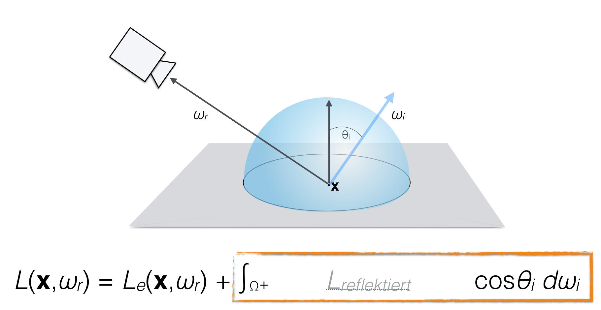
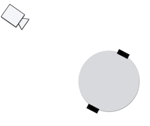
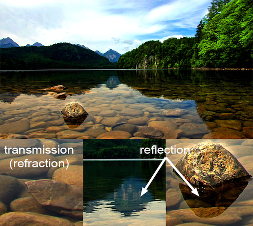

<meta name="viewport" content="width=device-width, initial-scale=1">
<link rel="stylesheet" href="github-markdown.css">
<style>
	.markdown-body {
		box-sizing: border-box;
		min-width: 200px;
		max-width: 980px;
		margin: 0 auto;
		padding: 45px;
	}

	@media (max-width: 767px) {
		.markdown-body {
			padding: 15px;
		}
	}
</style>
<article class="markdown-body">


<h1 id="materials-and-shading-workshop">Materials and Shading Workshop</h1>
<p>Prof. Dr. Lena Gieseke | l.gieseke@filmuniversitaet.de | Film University Babelsberg <em>KONRAD WOLF</em></p>
<h2 id="day-3">Day 3</h2>
<ul>
<li><a href="#materials-and-shading-workshop">Materials and Shading Workshop</a>
<ul>
<li><a href="#day-3">Day 3</a></li>
<li><a href="#what-happened-so-far">What happened so far?</a></li>
<li><a href="#recap">Recap</a>
<ul>
<li><a href="#brdfs">BRDFs</a></li>
</ul></li>
<li><a href="#global-illumination">Global Illumination</a>
<ul>
<li><a href="#rendering-equation">Rendering Equation</a></li>
</ul></li>
<li><a href="#today">Today</a></li>
<li><a href="#npr-shading-i">NPR Shading I</a></li>
<li><a href="#npr-shading-ii">NPR Shading II</a></li>
<li><a href="#the-fresnel-effect">The Fresnel Effect</a>
<ul>
<li><a href="#reflection-change-with-distance">Reflection Change With Distance</a></li>
<li><a href="#reflective-and-refractive-material">Reflective and Refractive Material</a></li>
<li><a href="#fresnel-equations">Fresnel Equations</a>
<ul>
<li><a href="#schlicks-approximation">Schlick’s Approximation</a></li>
</ul></li>
</ul></li>
<li><a href="#shading-interfaces">Shading Interfaces</a>
<ul>
<li><a href="#introduction-to-shading-in-houdini">Introduction To Shading in Houdini</a>
<ul>
<li><a href="#task-1">Task 1</a></li>
<li><a href="#task-2">Task 2</a></li>
<li><a href="#task-3">Task 3</a></li>
</ul></li>
<li><a href="#end-of-day-3">End of Day 3</a></li>
</ul></li>
</ul></li>
</ul>
<h2 id="what-happened-so-far">What happened so far?</h2>
<ul>
<li>Intro to Shading</li>
<li>Local Illumination</li>
<li>Local Shading Models</li>
<li>Global Illumination and the Rendering Equation</li>
<li>Implementation of p5’s material</li>
<li>Toon shading</li>
</ul>
<h2 id="recap">Recap</h2>
<h3 id="brdfs">BRDFs</h3>
<p>BRDF stands for <strong><em>Bidirectional Reflectance Distribution Functions (BRDF)</em></strong>.</p>
<p>BRDFs describe the reflectance behavior on a surface point. A BRDF returns the <em>ratio</em> of incoming irradiance to reflected radiance.</p>
<p>The BRDF <span class="math inline"><em>f</em>(<em>ω</em>i, <em>ω</em>r)</span> is a function of four variables:</p>
<p></p>
<p><a href="https://en.wikipedia.org/wiki/Bidirectional_reflectance_distribution_function">[Wikipedia]</a></p>
<h2 id="global-illumination">Global Illumination</h2>
<p></p>
<p>We need light from all directions!</p>
<p></p>
<h3 id="rendering-equation">Rendering Equation</h3>
<p></p>
<p></p>
<p>The physical basis for the rendering equation is the law of conservation of energy.</p>
<p>The outgoing light is the sum of the emitted light and the reflected light. The reflected light itself is the sum from all directions of the incoming light multiplied by the surface reflection and cosine of the incident angle.</p>
<p></p>
<h2 id="today">Today</h2>
<ul>
<li>One more NPR Example in p5 with live coding</li>
<li>Fresnel Effect</li>
<li>Introduction To Shading in Houdini</li>
</ul>
<p></p>
<h2 id="npr-shading-i">NPR Shading I</h2>
<p></p>
<h2 id="npr-shading-ii">NPR Shading II</h2>
<p></p>
<p>Many NPR shaders make use of the outline of an object.</p>
<p>The outline of an object is detected by the angle between the normal of the surface point and the view vector.</p>
<p></p>
<p>Many NPR shaders make use of the outline of an object.</p>
<p>The outline of an object is detected by the angle between the normal of the surface point and the view vector.</p>
<p></p>
<p></p>
<p><span class="math inline"><em>c</em><em>o</em><em>s</em><em>θ</em> = <em>V</em> ∙ <em>N</em></span></p>
<div class="sourceCode" id="cb1"><pre class="sourceCode js"><code class="sourceCode javascript"><a class="sourceLine" id="cb1-1" title="1">float cos_view_normal <span class="op">=</span> <span class="at">max</span>(<span class="fl">0.0</span><span class="op">,</span> <span class="at">dot</span>(view_dir<span class="op">,</span> normal))<span class="op">;</span></a></code></pre></div>
<p></p>
<p><span class="math inline"><em>c</em><em>o</em><em>s</em><em>θ</em> = <em>A</em> ∙ <em>B</em></span></p>
<p></p>
<p>👩🏽‍💻 🧑🏻‍💻 👩🏼‍💻</p>
<p></p>
<p>This effect is based on the <em>Fresnel effect</em>.</p>
<h2 id="the-fresnel-effect">The Fresnel Effect</h2>
<p></p>
<p><a href="https://www.dorian-iten.com/fresnel/">[Dorian Iten]</a></p>
<p></p>
<p><a href="https://www.dorian-iten.com/fresnel/">[Dorian Iten]</a></p>
<p></p>
<p><a href="https://www.dorian-iten.com/fresnel/">[Dorian Iten]</a></p>
<p>The larger the angle between viewer and <strong>surface normal</strong>, the stronger the reflection.</p>
<p></p>
<p></p>
<p><a href="https://www.dorian-iten.com/fresnel/">[Dorian Iten]</a></p>
<p><a href="http://filmicworlds.com/blog/everything-has-fresnel/">Everything has Fresnel</a></p>
<p></p>
<p><a href="https://shop.spreadshirt.comvrayinfo/everything+has+fresnel-A5d89cfe86bbdbb2e6a4903d7?productType=175">[vray]</a></p>
<p>The Fresnel effect models the fact that the amount of light the viewer sees reflected from a surface depends on the viewing angle.</p>
<h3 id="reflection-change-with-distance">Reflection Change With Distance</h3>
<p></p>
<p><a href="https://www.dorian-iten.com/fresnel/">[Dorian Iten]</a></p>
<p> </p>
<p><a href="https://www.dorian-iten.com/fresnel/">[Dorian Iten]</a></p>
<h3 id="reflective-and-refractive-material">Reflective and Refractive Material</h3>
<p></p>
<p><a href="https://www.scratchapixelcom/lessons/3d-basic-rendering/introduction-to-shading/reflection-refraction-fresnel">[scratchapixel]</a></p>
<p></p>
<p><a href="https://google.github.iofilament/Filament.html">[filament]</a></p>
<h3 id="fresnel-equations">Fresnel Equations</h3>
<p>The <a href="https://www.wikiwand.com/en/Fresnel_equations">Fresnel Equations</a> define for transparent materials such as glass and water how much light is reflected vs. how much light is transmitted.</p>
<p>More precisely, they describe the reflection and transmission of light when incident on an interface between different media, or the ratio of reflected and transmitted energy.</p>
<p></p>
<p><a href="https://wwwwikiwand.com/en/Fresnel_equations">[wiki]</a></p>
<h4 id="schlicks-approximation">Schlick’s Approximation</h4>
<p>In computer graphics, <a href="https://www.wikiwand.com/en/Schlick%27s_approximation">Schlick’s approximation</a> is a formula for approximating the contribution of the Fresnel factor, shaping the reflection and transmission of light between media.</p>
<p><em>On a side note:</em> Check out this awesome renderer: <a href="https://google.github.io/filament/">Filament</a></p>
<h2 id="shading-interfaces">Shading Interfaces</h2>
<h3 id="introduction-to-shading-in-houdini">Introduction To Shading in Houdini</h3>
<h4 id="task-1">Task 1</h4>
<p>Watch the tutorials and follow along. I recommend to increase the playback speed, for that you need to download the video and watch it e.g. with the <a href="https://www.videolan.org/vlc/">VLC player</a>. When doing the tutorials, please also turn your brain on.</p>
<ul>
<li><a href="https://e.pcloud.link/publink/show?code=XZ2z6kZqlc81zzf7E0s3XWxN8pyobkK8gpk">Tutorial 01 - Intro Principled Shader</a></li>
<li><a href="https://e.pcloud.link/publink/show?code=XZWz6kZcPcI7iPYtwYwI8F32cTFwQF733xX">Tutorial 02 - Intro Principled Shader - Layering Shaders</a></li>
<li><a href="https://e.pcloud.link/publink/show?code=XZsz6kZJQ1M2SvwrIFWTdPhEN0Q5JJRvjrV">Tutorial 03 - Intro Non-Principled Shader</a></li>
</ul>
<h4 id="task-2">Task 2</h4>
<p>Investigate materials in the Material Palette and read the documentation about the principled shader or any other shader.</p>
<h4 id="task-3">Task 3</h4>
<p>Come up with a simple but nice scene including interesting shading effects. Submit a rendering of that scene in your exercise folder until tomorrow.</p>
<hr />
<h2 id="end-of-day-3">End of Day 3</h2>
<p>👩🏽‍🎨</p>


</article>

